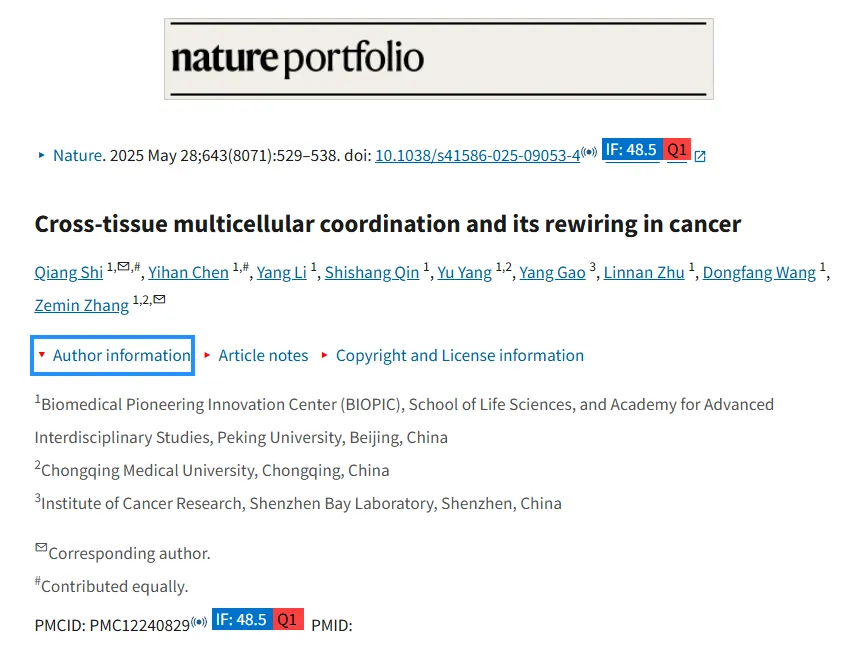
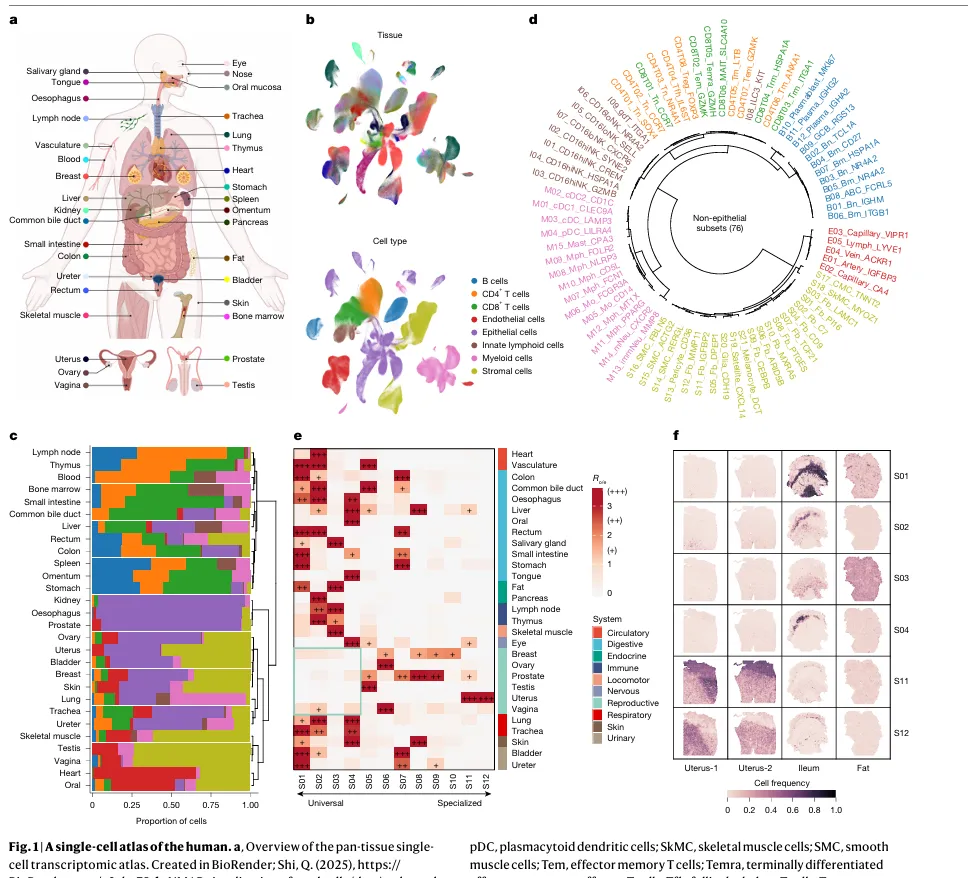
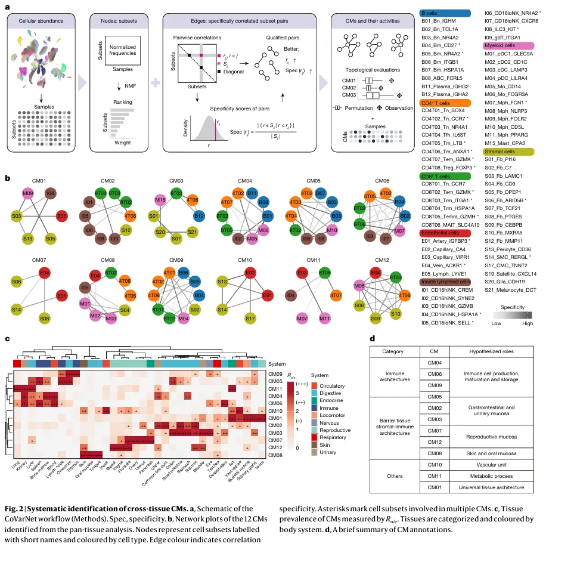
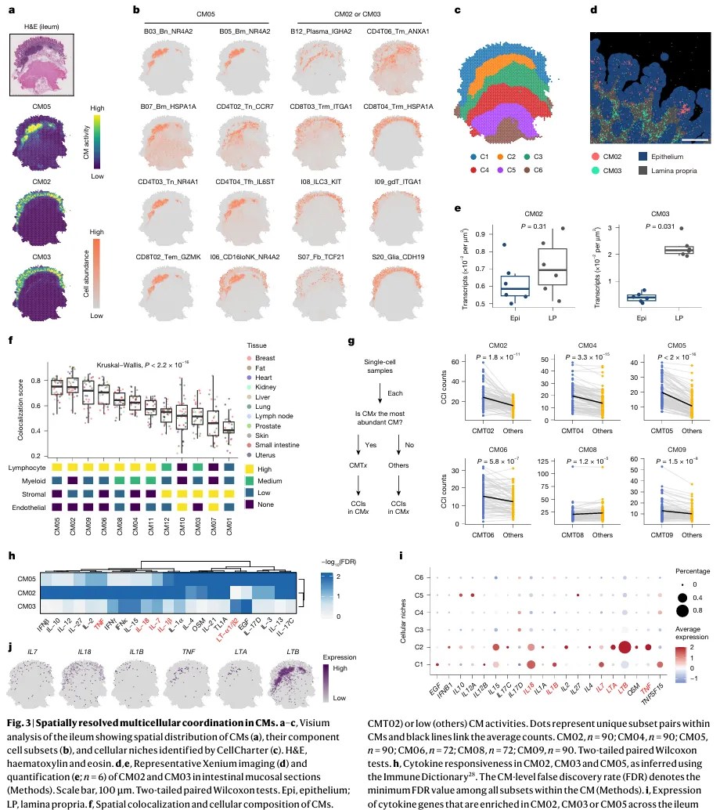
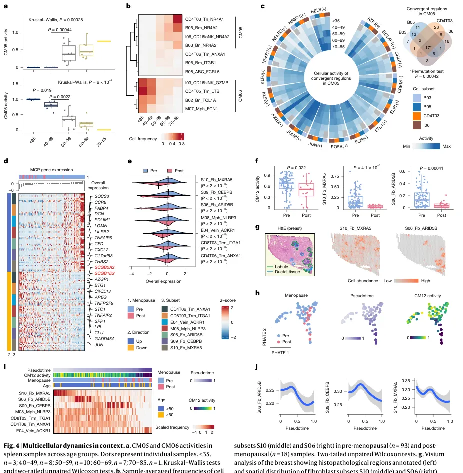
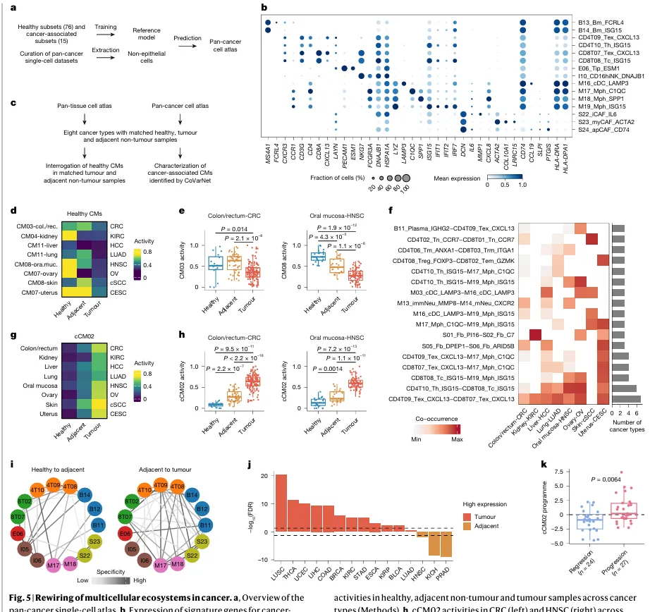

张泽民院士的《Nature》|706个单细胞样本、35种组织，这篇article的数据量比你的综述都多
原文：https://mp.weixin.qq.com/s?__biz=MzAwMzIzOTk5OQ==&mid=2247530984&idx=1&sn=41ea9b742095ea9f22e943fc7422a5f1&chksm=9b3c00b8ac4b89ae685f91e9ccd96416a1b33a615f6cf574b4bac017bcb77fed50600f06e767#rd 合集：文献速递
一、写在前面
今天我们要深入剖析一篇今年7月发表在《Nature》上的重磅研究 ——《Cross-tissue multicellular coordination and its rewiring in cancer》，影响因子48.5。本文构建了覆盖35种健康组织 + 29种癌症的单细胞图谱，开发了多细胞模块分析工具 CoVarNet，揭示了多细胞协作的普适规律，并为癌症研究提供了新的标志物，是典型的“数据+方法+科学发现” 三位一体的顶刊成果。通讯作者是大家熟知的"单细胞院士"——张泽民 老师。这篇文章从多组织单细胞图谱构建到癌症微环境重构，系统性揭示了健康与疾病状态下多细胞生态系统的组织规律，无论是研究思路还是技术方法，都对我们生信领域的硕博研究极具启发意义。原文链接:https://pmc.ncbi.nlm.nih.gov/articles/PMC12240829/DOI: 10.1038/s41586-025-09053-4 
二、研究方法
本文的技术路线围绕 “数据构建→模块鉴定→功能验证→疾病延伸 ” 展开，核心方法可分为四大类，每一步都针对领域关键问题设计，逻辑严密且可复现：
1. 单细胞与空间转录组数据的整合与质控
-
数据收集
- 健康组织：收集33个数据集、706个样本，覆盖35种人体组织，经严格质控后保留229万个高质量单细胞（排除冷冻样本、单一细胞富集样本，仅保留 10x Genomics 单细胞数据，减少批次效应）；
- 癌症组织：收集48个数据集、1062个样本，覆盖29种癌症，保留303万个高质量非上皮细胞，同时纳入癌旁组织作为 “癌前状态” 对照。
-
数据整合
-
用 scIB 平台 benchmark 多种整合工具（BBKNN、Harmony、scVI 等），最终选择BBKNN （批次校正效果最佳，且能保留生物异质性）；
- 统一基因注释（仅保留GRCh38不同版本共有的21812个基因），校正细胞周期、线粒体基因比例等混杂因素。
-
细胞注释
-
分层聚类：先按经典标志物分为 8 大类细胞（免疫细胞、上皮细胞、内皮细胞等），再细分 76 个非上皮细胞亚群（如年龄相关 B 细胞 ABC、组织驻留记忆 T 细胞 Trm）；
- 工具辅助：用 CellTypist（自动细胞注释工具）和 TOSICA（Transformer-based 转移学习工具）验证注释结果，确保准确性。
2. 多细胞模块（CM）鉴定：CoVarNet 工具开发
为解决 “如何从海量心问题，团队开发了CoVarNet 计算框架，核心逻辑是 “基于细胞丰度协方差推断功能模块”，具体步骤：
-
输入数据
-
非上皮细胞亚群的标准化丰度矩阵（排除上皮细胞，因其组织特异性过强，干扰跨组织规律）；
-
双模块联合分析
- 模块 1（节点筛选）：用非负矩阵分解（NMF） 提取细胞亚群共现因子，选择 cophenetic 相关系数最高的 12 个因子作为候选模块（每个因子的 Top10 亚群为模块 “节点”）；
- 模块 2（边缘筛选）：计算亚群对的 Pearson 相关系数，结合 “特异性指数（Spec）” 筛选 “特异性共现对”（排除泛化相关，保留模块内专属关联）
-
模块验证
- 通过拓扑分析和置换检验验证模块的统计学显著性。
3. 多维度功能验证
-
空间验证
- 用cell2location （贝叶斯空间解卷积工具）将 CM 映射到Visium空间转录组数据，验证模块内细胞的空间共定位（如 CM08 在皮肤表皮的富集）；
- 用Xenium （超高分辨率原位测序）解析单细胞水平的模块分布（如小肠 CM02/CM03 在固有层 vs 上皮的差异定位）。
-
细胞互作验证
-
用CellPhoneDB 和CellChat 分析配体 - 受体互作（如内皮细胞分泌多种配体，淋巴细胞富集特异性互作）；
- 结合"Immune Dictionary"（细胞因子响应数据库），推断模块内细胞的细胞因子调控网络（如CM05中 IL7/IL18 的富集）。
-
表型关联验证
-
结合临床表型（年龄、绝经状态、癌症分期）分析CM活性变化；
- 用GTEx bulk RNA-seq 数据（12240 个样本）验证CM的组织分布规律，确保单细胞结果可推广到 bulk 水平。
4. 癌症多细胞重构分析
- 健康CM在癌症中的变化 计算8种癌症（有健康 - 癌旁 - 肿瘤匹配样本）中健康CM的活性，评估 “组织特异性模块丢失”；
- 癌症相关模块（cCM）鉴定 将CoVarNet应用于泛癌单细胞数据，鉴定4个cCM，重点分析cCM02 （富集癌症相关亚群，如耗竭T细胞Tex、癌相关成纤维细胞CAF）；
-
临床价值验证
- 用TCGA bulk 数据验证cCM02相关基因程序的泛癌表达模式；
- 用肺癌癌前病变数据（51 例，已知进展结局）验证cCM02程序对癌症进展的预测价值。
**三、主要结果 **
本文结果按 “健康组织多细胞模块→模块的时空动态→癌症中模块重构 ” 的逻辑展开，共5张核心结果图，每张图都对应关键科学问题，我们逐一解析：
●图 1：人类泛组织单细胞图谱的构建与细胞亚群特征
1、核心问题 ：健康人体35种组织的细胞组成有何规律？细胞亚群是否存在组织偏好性？ 2、分析方法 ：单细胞数据整合、分层聚类、组织丰度分析（Rₒ/ₑ比值：观察值 / 期望值，评估亚群在组织中的富集程度，值得一提的是，这一方法也是张老师团队此前首创的）；
3、关键结论 ：健康组织的细胞组成具有组织特异性，且细胞亚群存在 “通用 - 特异” 分层，尤其是成纤维细胞和免疫细胞的组织偏好性显著。

Figure 1
●图 2：跨组织多细胞模块（CM）的系统鉴定
1、核心问题 ：跨组织的多细胞协作是否存在统一模块？这些模块的组织分布有何规律？ 2、分析方法 ：CoVarNet 工具、组织丰度分析（Rₒ/ₑ比值）、GTEx bulk 数据验证；
3、关键结论 ：健康人体存在 12 个跨组织多细胞模块，每个模块具有明确的细胞组成、组织偏好性和功能定位，且可通过 GTEx bulk 数据复现。

Figure2
●图 3：多细胞模块的空间特征与细胞互作
1、核心问题 ：CM 内的细胞是否在空间上共定位？模块内的细胞互作有何规律？ 2、分析方法 ：空间转录组（Visium/Xenium）、细胞互作分析（CellPhoneDB）、细胞因子响应分析； 3、关键结论 ：CM 内细胞存在严格的空间共定位，且细胞互作模式与细胞谱系组成相关（淋巴细胞依赖接触互作，内皮 / 基质细胞依赖长距离信号），细胞因子是模块功能的核心调控因子。

Figure 3
●图 4：多细胞模块的时空动态（年龄与绝经）
1、核心问题 ：CM 是否随生理状态（年龄、绝经）动态变化？变化的分子机制是什么？ 2、分析方法 ：年龄分层分析、绝经状态关联分析、调控网络推断（SCENIC）、轨迹分析（PHATE/Palantir）； 3、关键结论 ：CM 的动态变化与生理状态紧密关联 —— 脾脏 CM05/06 随年龄呈现 “此升彼降” 的协同变化，核心调控子为 AP-1 和 NR4A1；乳腺 CM12 随绝经呈现 “炎症下调、成纤维细胞减少” 的轨迹，成纤维细胞是绝经相关组织重构的关键载体。

Figure 4
●图 5：癌症中多细胞生态系统的重构
1、核心问题 ：癌症如何改变健康组织的 CM？是否存在泛癌共有的 “癌症相关多细胞模块（cCM）”？其临床价值如何？ 2、分析方法 ：泛癌单细胞数据整合、cCM 鉴定（CoVarNet）、临床样本验证（TCGA / 癌前病变）； 3、关键结论 ：癌症会同时重构两种多细胞生态 —— 健康组织特异性 CM 的丢失，以及泛癌共有的 cCM（如 cCM02）的出现；cCM02 不仅是癌症进展的标志物，还可预测癌前病变的恶性转化，具有重要临床价值。

Figure 5
四、最后聊聊
这篇文章通过构建大规模单细胞图谱、开发CoVarNet计算框架，系统揭示了人体多细胞模块的组织原则及其在癌症中的重编程机制，是一项集数据资源、计算方法、生物学发现 于一体的高水平研究，为理解组织稳态与疾病机制提供了新范式。本文用到的许多分析方法我们也制作过教程，具体可跳转：cell2location（贝叶斯空间解卷积工具）Visium空间转录组数据分析CellPhoneDBCellChat分析配体 - 受体互作bulk RNA-seq 数据实战
参考文献
[1]: Shi Q, Chen Y, Li Y, Qin S, Yang Y, Gao Y, Zhu L, Wang D, Zhang Z. Cross-tissue multicellular coordination and its rewiring in cancer. Nature. 2025 Jul;643(8071):529-538. doi: 10.1038/s41586-025-09053-4. Epub 2025 May 28. PMID: 40437094; PMCID: PMC12240829.

如何联系我们

 留一个领取资料、开箱即用的单细胞分析镜像的微信号[Biomamba_zhushou]，方便各位随时交流。同时我们也构建了交流群矩阵，欢迎大家入群讨论。
大家可以阅读完这几篇之后添加给生信入门初学者的小贴士
没有检索，就没有发言权
留一个领取资料、开箱即用的单细胞分析镜像的微信号[Biomamba_zhushou]，方便各位随时交流。同时我们也构建了交流群矩阵，欢迎大家入群讨论。
大家可以阅读完这几篇之后添加给生信入门初学者的小贴士
没有检索，就没有发言权
已有生信基地联系方式的同学无需重复添加

 您点的每个赞和在看，我都认真当成了喜欢
您点的每个赞和在看，我都认真当成了喜欢